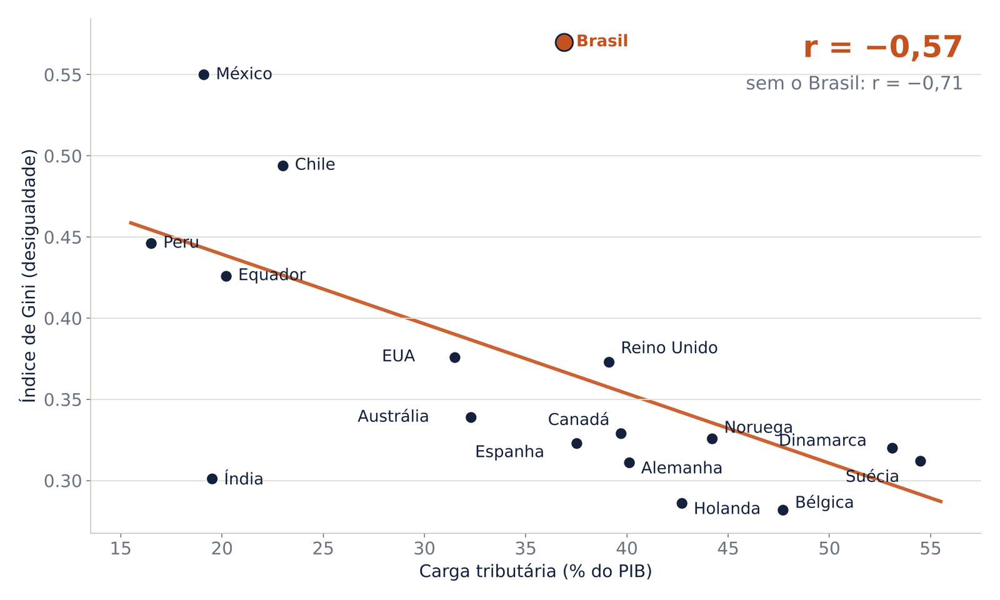
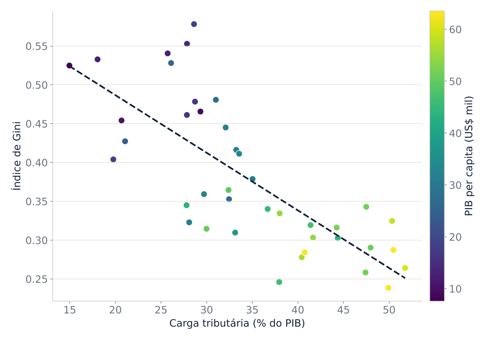
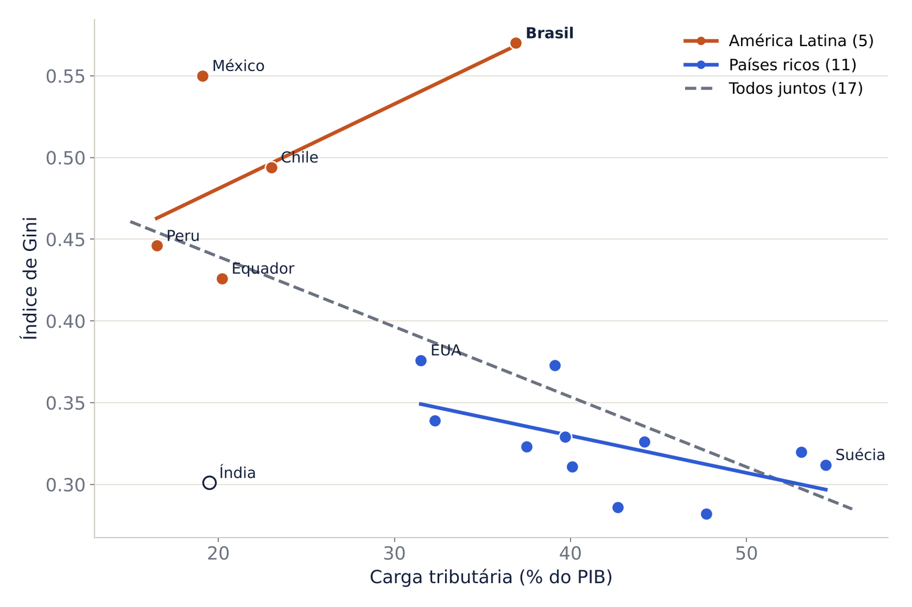
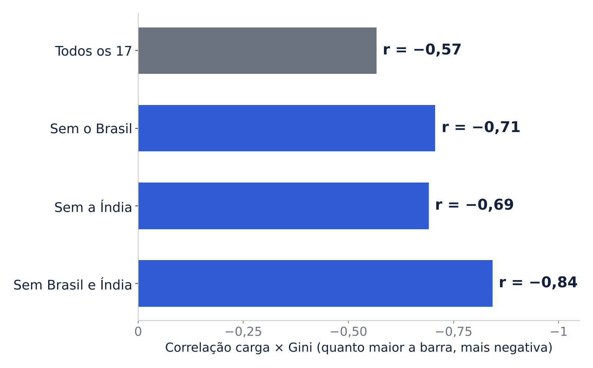
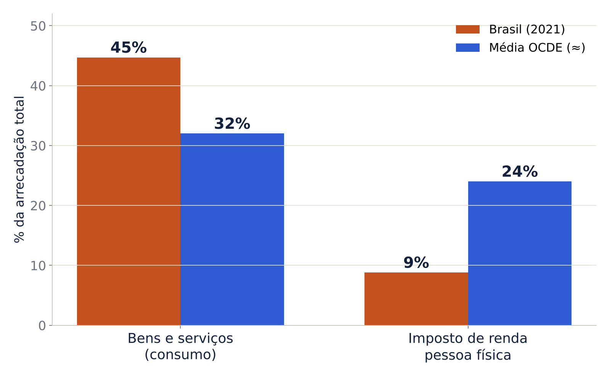

Ao final deste conteúdo você deve ser capaz de
- calcular e interpretar correlações de Pearson e de Spearman e reconhecer suas armadilhas;
- explicar por que correlação não implica causalidade usando resultados potenciais e viés de seleção;
- estimar, interpretar e testar uma regressão linear simples por MQO;
- identificar quando o coeficiente de uma regressão tem interpretação causal.
1. Correlação
O coeficiente de correlação de Pearson mede a intensidade da relação linear entre duas variáveis (ver Conteúdo 2):
Propriedades: é simétrico (\(r_{xy}=r_{yx}\)), adimensional e não muda com transformações lineares positivas (medir em reais ou em milhares de reais dá o mesmo \(r\)).
A correlação de Spearman \(r_s\) é a correlação de Pearson calculada sobre os postos (rankings) das observações. Ela capta relações monotônicas não lineares e é menos sensível a outliers.
Teste de \(H_0:\rho=0\): \(t = r\sqrt{n-2}/\sqrt{1-r^2}\sim t_{n-2}\).
Armadilhas
- Relação não linear: \(y=x^2\) com \(x\) simétrico em torno de zero dá \(r\approx 0\), embora a dependência seja perfeita.
- Outliers: um único ponto pode criar ou destruir uma correlação. O quarteto de Anscombe (1973) tem quatro conjuntos de dados com o mesmo \(r = 0{,}82\) e gráficos completamente diferentes. Sempre faça o gráfico de dispersão.
- Correlação espúria: duas séries com tendência no tempo (PIB e número de celulares, por exemplo) são correlacionadas sem que uma cause a outra.
- Agregação: a correlação entre médias de grupos (municípios, setores) costuma ser bem maior que a correlação entre indivíduos (falácia ecológica).
Como cada valor de r aparece nos dados
Dados simulados (aba Galeria_r de correlacao_causalidade_sintetica.xlsx). Antes de ler o \(r\) de cada painel, tente estimá-lo.
Como cada valor de r aparece nos dados (simulados, n = 60 por painel)
Duas armadilhas do r
- Outlier: um único ponto cria uma correlação de +0,51 onde não havia nenhuma (sem ele, r = −0,01).
- Não linearidade: no painel em U, Y depende fortemente de X, mas r ≈ 0. O \(r\) mede só associação linear.
- Lição: nunca reporte \(r\) sem o diagrama de dispersão.
2. Correlação não é causalidade
Três mecanismos geram correlação sem que \(X\) cause \(Y\):
- Confundidor (variável omitida): \(Z\) afeta \(X\) e \(Y\). Empresas grandes gastam mais com publicidade e vendem mais, ainda que a publicidade tenha pouco efeito.
- Causalidade reversa (simultaneidade): \(Y\) afeta \(X\). Municípios com mais criminalidade contratam mais policiais; a correlação entre policiais e crimes é positiva.
- Seleção da amostra: analisar só as empresas que sobreviveram, ou só os fundos que continuam abertos (viés de sobrevivência).
2.1 Modelo de resultados potenciais (Rubin)
Seja \(D_i\in\{0,1\}\) o tratamento (receber um programa, adotar uma lei, ter auditoria Big Four). Cada unidade tem dois resultados potenciais: \(Y_i(1)\) se tratada e \(Y_i(0)\) se não tratada. O efeito causal individual é \(Y_i(1)-Y_i(0)\).
Problema fundamental da inferência causal
Para cada unidade observamos apenas um dos dois resultados: \(Y_i = D_iY_i(1)+(1-D_i)Y_i(0)\). O outro é o contrafactual. Toda estratégia de identificação é uma forma de construir um contrafactual crível.
Parâmetros de interesse: o efeito médio do tratamento \(ATE=E[Y(1)-Y(0)]\) e o efeito médio sobre os tratados \(ATT=E[Y(1)-Y(0)\mid D=1]\).
A comparação ingênua de médias se decompõe em:
O viés de seleção aparece quando os tratados seriam diferentes dos não tratados mesmo sem o tratamento. Em um experimento aleatório, \(D\) é sorteado, e portanto independente de \((Y(0),Y(1))\): o viés de seleção é zero e a diferença de médias identifica o ATE. Sem sorteio, recorremos a quase-experimentos, tema dos próximos conteúdos:
| Estratégia | Hipótese de identificação | Conteúdo |
|---|---|---|
| Regressão com controles | Seleção nas observáveis: condicionado a \(X\), \(D\) é “como se fosse aleatório” | 4 |
| Efeitos fixos (painel) | O confundidor não observado é constante no tempo | 5 |
| Diferenças em diferenças | Tendências paralelas na ausência do tratamento | 6 |
| Regressão descontínua | Continuidade dos resultados potenciais no corte | 7 |
| Controle sintético | Uma combinação de unidades de controle reproduz o tratado antes da intervenção | 8 |
3. Regressão linear simples
\(y\): variável dependente (explicada); \(x\): variável independente (explicativa, regressor); \(u\): erro, que reúne todos os outros fatores que afetam \(y\). \(\beta_1\) mede quanto \(y\) varia quando \(x\) aumenta uma unidade, mantidos constantes os fatores em \(u\).
3.1 Estimador de Mínimos Quadrados Ordinários (MQO)
MQO escolhe \(\hat\beta_0,\hat\beta_1\) que minimizam a soma dos quadrados dos resíduos \(\sum_i(y_i-\hat\beta_0-\hat\beta_1x_i)^2\). As condições de primeira ordem dão:
Consequências algébricas: a reta passa por \((\bar x,\bar y)\); os resíduos \(\hat u_i=y_i-\hat y_i\) somam zero e são não correlacionados com \(x\).
3.2 Qualidade do ajuste
Na regressão simples, \(R^2=r_{xy}^2\). Um \(R^2\) baixo não invalida a estimativa causal, e um \(R^2\) alto não a garante: \(R^2\) mede ajuste, não identificação.
3.3 Hipóteses (Wooldridge, RLS.1–RLS.5)
- Linearidade nos parâmetros.
- Amostragem aleatória.
- Variação amostral em \(x\) (os \(x_i\) não são todos iguais).
- Média condicional zero: \(E[u\mid x]=0\). É a hipótese crucial: garante que \(\hat\beta_1\) é não viesado e que \(\beta_1\) é causal. Ela falha se houver confundidor em \(u\) correlacionado com \(x\).
- Homocedasticidade: \(Var(u\mid x)=\sigma^2\). Necessária apenas para a fórmula usual do erro-padrão.
3.4 Formas funcionais
| Modelo | Equação | Interpretação de \(\beta_1\) |
|---|---|---|
| Nível-nível | \(y=\beta_0+\beta_1x\) | \(\Delta y=\beta_1\Delta x\) |
| Log-nível | \(\ln y=\beta_0+\beta_1x\) | \(\%\Delta y\approx 100\beta_1\Delta x\) (semielasticidade) |
| Nível-log | \(y=\beta_0+\beta_1\ln x\) | \(\Delta y\approx(\beta_1/100)\,\%\Delta x\) |
| Log-log | \(\ln y=\beta_0+\beta_1\ln x\) | \(\%\Delta y\approx\beta_1\,\%\Delta x\) (elasticidade) |
Laboratório no Excel e no Gretl
Para praticar com uma base maior, no estilo da PNAD, veja o Laboratório: vale a pena estudar?, com roteiros em Excel e Gretl, base para download e exercícios com gabarito.
4. Inferência
Sob RLS.1–RLS.5:
Intervalo de confiança de 95%: \(\hat\beta_1\pm t_{0{,}975;\,n-2}\,ep(\hat\beta_1)\). Mais variação em \(x\) e mais observações reduzem o erro-padrão.
Erros-padrão robustos
Se a variância do erro depende de \(x\) (heterocedasticidade, muito comum em dados contábeis e financeiros), use erros-padrão robustos de White (HC1): , robust no Stata, cov_type="HC1" no Python, vcov = "hetero" no fixest do R. Os coeficientes não mudam; só a inferência.
5. Exemplo: publicidade e vendas
Dados simulados de 120 empresas (dados/publicidade_vendas.csv): gasto com publicidade e vendas, ambos em R$ mil, e tamanho da empresa. A simulação foi construída com efeito causal verdadeiro de 2,5: cada R$ 1 mil em publicidade gera R$ 2,5 mil em vendas. Empresas maiores gastam mais com publicidade e também vendem mais.
| Variável dependente: vendas | (1) Simples | (2) Com controle |
|---|---|---|
| Publicidade | 10,059*** (0,801) | 3,407*** (0,716) |
| Tamanho | 2,823*** (0,213) | |
| Constante | 98,314*** (10,625) | 37,909*** (8,151) |
| \(n\) | 120 | 120 |
| \(R^2\) | 0,572 | 0,828 |
Erros-padrão convencionais entre parênteses. *** p<0,01. Com erros-padrão robustos (HC1), o da coluna (1) é 0,705.
Interpretação
A correlação entre publicidade e vendas é 0,756 e, na regressão simples, \(\hat\beta_1=10{,}06\): cada R$ 1 mil a mais de publicidade está associado a R$ 10 mil a mais de vendas, com \(R^2 = 0{,}572 = 0{,}756^2\). Pela regressão, uma empresa que gasta R$ 15 mil venderia, em média, \(98{,}31 + 10{,}06\times15 \approx\) R$ 249 mil.
Mas \(\hat\beta_1\) é quatro vezes o efeito causal (2,5). O tamanho da empresa está no erro e é correlacionado com a publicidade, o que viola \(E[u\mid x]=0\). Controlando pelo tamanho (coluna 2, prévia do Conteúdo 4), a estimativa cai para 3,41, e o IC 95% [2,0; 4,8] contém o valor verdadeiro. A correlação era real; a interpretação causal da regressão simples, não.
Código
Os scripts completos estão em codigo/.
import pandas as pd
import statsmodels.formula.api as smf
df = pd.read_csv("dados/publicidade_vendas.csv")
df[["vendas", "publicidade", "tamanho"]].corr() # Pearson
df[["vendas", "publicidade"]].corr(method="spearman") # Spearman
m1 = smf.ols("vendas ~ publicidade", data=df).fit()
print(m1.summary())
# Coeficiente "à mão": cov(x, y) / var(x)
b1 = df["publicidade"].cov(df["vendas"]) / df["publicidade"].var()
# Erros-padrão robustos (HC1)
smf.ols("vendas ~ publicidade", data=df).fit(cov_type="HC1").summary()
# Previsão
m1.predict(pd.DataFrame({"publicidade": [15]}))
# Controlando pelo confundidor
smf.ols("vendas ~ publicidade + tamanho", data=df).fit().paramsdf <- read.csv("dados/publicidade_vendas.csv")
cor(df[, c("vendas", "publicidade", "tamanho")])
cor(df$vendas, df$publicidade, method = "spearman")
cor.test(df$vendas, df$publicidade)
m1 <- lm(vendas ~ publicidade, data = df)
summary(m1)
cov(df$publicidade, df$vendas) / var(df$publicidade) # b1 à mão
# Erros-padrão robustos
library(fixest)
feols(vendas ~ publicidade, data = df, vcov = "hetero")
predict(m1, newdata = data.frame(publicidade = 15))
plot(df$publicidade, df$vendas); abline(m1, col = "red")
summary(lm(vendas ~ publicidade + tamanho, data = df))import delimited "dados/publicidade_vendas.csv", clear
pwcorr vendas publicidade tamanho, sig
spearman vendas publicidade
regress vendas publicidade
regress vendas publicidade, robust
* Previsão para publicidade = 15
margins, at(publicidade = 15)
twoway (scatter vendas publicidade) (lfit vendas publicidade)
regress vendas publicidade tamanho6. Simulador: o confundidor em ação
Os dados são gerados por \(Z\sim N(0,1)\), \(X = a\,Z + v\) e \(Y = \beta X + c\,Z + u\). Você controla o efeito causal \(\beta\) e a força do confundidor (\(a\) e \(c\)). Compare a reta da regressão simples com o efeito verdadeiro.
Dispersão de Y contra X
7. Estudos de caso
As bases estão em dados_caso/ (ver o LEIA-ME). Os exemplos clássicos dos slides foram reconstruídos em dados_caso/exemplos_slides.py. As séries de empresas e a do sorvete são ilustrativas, construídas para a disciplina. Os dados de Gini e PIB per capita vêm do Our World in Data / Banco Mundial.
7.1 Sorvete e afogamentos: o confundidor clássico
Em uma cidade litorânea, as vendas de sorvete e o número de afogamentos sobem e descem juntos: são altos no verão e baixos no inverno (sorvete_afogamentos_aula.csv).
Vendas de sorvetes e afogamentos ao longo do ano (escalas à esquerda e à direita)
A correlação é r = 0,98, e a regressão \(\widehat{afogamentos}=-26{,}2+0{,}371\times vendas\) tem \(R^2=0{,}96\). Proibir o sorvete reduziria os afogamentos? Não: o calor leva as pessoas a tomar sorvete e a ir à praia. É um confundidor.
Controlando a temperatura. Para ver isso nos números, a série ilustrativa de 36 meses (sorvete_afogamentos.csv) acrescenta a temperatura média de cada mês:
Série ilustrativa de 36 meses (escalas à esquerda e à direita)
| Dependente: afogamentos | (1) | (2) |
|---|---|---|
| Vendas de sorvete (mil unid.) | 0,223*** (0,014) | 0,056 (0,072) |
| Temperatura média (°C) | 0,551** (0,233) |
A correlação simples é 0,94. Quando a temperatura entra na regressão, o coeficiente do sorvete cai de 0,223 para 0,056 e deixa de ser significativo. A correlação parcial entre sorvete e afogamentos, descontado o efeito da temperatura, é só 0,13. Ela é a correlação entre os resíduos das regressões de cada variável na temperatura, a mesma ideia do teorema de Frisch-Waugh-Lovell do Conteúdo 4.
7.2 Correlações espúrias
O site Spurious Correlations, de Tyler Vigen, reúne pares de séries com correlações altíssimas e nenhuma relação plausível entre si (também publicado no livro Spurious Correlations, Hachette, 2015). Vale a visita em aula. Dois exemplos célebres:
Consumo de margarina nos EUA × taxa de divórcios no Maine (2000–2009): r = 0,993
Filmes com Nicolas Cage × afogamentos em piscinas nos EUA (1999–2009): r = 0,666
Margarina e divórcio: série original divulgada por Tyler Vigen (margarina_divorcio_maine.csv; fontes: USDA e CDC). É a mesma do slide, com 8,2 lb em 2000 e r = 0,993.
Por que correlações assim aparecem?
- Tendências comuns: o consumo de margarina e os divórcios no Maine caíram ao longo da década por razões independentes. Quaisquer duas séries que só sobem ou só descem no tempo terão correlação alta.
- Amostras pequenas: com 10 ou 11 anos de dados, coincidências produzem correlações elevadas com facilidade. Com n = 11, até r = 0,666 é “significativo” a 5% (t = 2,68).
- Mineração de dados (data dredging): o site compara milhares de séries entre si. Testando muitas combinações a 5% de significância, cerca de 1 em cada 20 pares sem relação alguma parecerá significativo. É o mesmo risco de rodar dezenas de regressões até “achar” um resultado.
Antes de aceitar uma correlação, pergunte: existe um mecanismo plausível? A relação se mantém em outro período, em outra amostra, ou depois de retirar a tendência?
7.3 Carga tributária e concentração de renda
Este exemplo virou o estudo de caso completo da Seção 8, com dados atuais da OCDE e do Brasil (paises_carga_gini.xlsx).
7.4 Salário mínimo e cesta básica: correlação por tendência
Valores mensais de jan/2018 a out/2021 (salario_minimo_cesta_basica.csv).
Cesta básica e salário mínimo (R$, escalas à esquerda e à direita)
- A correlação entre os níveis é 0,96: as duas séries sobem com a inflação. Mas a correlação entre as variações mensais é só 0,20. O salário mínimo muda uma vez por ano, em janeiro, e a cesta sobe todo mês.
- Na regressão do salário na cesta, o coeficiente cai de 0,321 para 0,144 quando se inclui uma tendência linear: boa parte da “relação” era a tendência comum. Com séries temporais, compare variações (ou inclua tendência) antes de concluir.
- A pergunta econômica relevante é outra: o poder de compra. Em jan/2018 o salário mínimo comprava 0,97 cesta; em out/2021, apenas 0,72. Correlação alta entre níveis não diz que o salário “acompanhou” a cesta.
7.5 Vacinação e óbitos: a correlação muda de sinal
Dez meses de uma campanha de vacinação (vacinacao_obitos.csv): percentual da população com esquema completo e número de óbitos.
% vacinados e óbitos por mês (escalas à esquerda e à direita)
- No período todo, r = −0,40 (Spearman −0,26): uma correlação “fraca”. Mas ela esconde duas fases. De janeiro a abril, óbitos e vacinação sobem juntos (r = +0,996), porque a vacinação começa no meio de uma onda da doença. De abril a outubro, com a cobertura crescendo, os óbitos caem (r = −0,97).
- Ler o r = +0,996 do início como “a vacina aumenta os óbitos” é confundir correlação com causalidade, e ignora a temporalidade: o efeito da vacina depende de semanas para a imunização e de uma cobertura mínima. A onda epidemiológica é um confundidor que varia no tempo.
- A correlação de Pearson resume uma relação linear e estável. Quando a relação muda ao longo do tempo, um único r engana: faça o gráfico, divida os períodos e pense nas defasagens.
7.6 Desigualdade e renda: Gini × PIB per capita
Base com 164 países, de 2010 a 2019 (gini_pib_mundo.dta), e um recorte com seis países sul-americanos (gini_pib_america_sul.dta).
| Corte transversal | Países | Pearson (PIB) | Pearson (ln PIB) | Spearman |
|---|---|---|---|---|
| 2010 | 153 | −0,401 | −0,335 | −0,369 |
| 2015 | 157 | −0,347 | −0,298 | −0,344 |
| 2019 | 152 | −0,325 | −0,281 | −0,339 |
Com a observação mais recente de cada país (n = 164), a regressão simples dá \(\widehat{Gini}=0{,}553-0{,}0197\ln(PIB)\) (ep robusto 0,004; \(R^2=0{,}088\)). É um modelo nível-log: dobrar o PIB per capita está associado a um Gini \(0{,}0197\times\ln 2\approx 0{,}014\) menor. Com um termo quadrático em \(\ln(PIB)\), o coeficiente do quadrado é negativo e significativo (p = 0,03): um formato de U invertido, como na curva de Kuznets, com pico em torno de US$ 3.500.
América do Sul: entre 2010 e 2019, nos seis países, o Gini caiu enquanto o PIB per capita subia. A correlação dentro de cada país vai de −0,62 (Brasil) a −0,92 (Peru). O Brasil foi o que menos reduziu a desigualdade (0,537 → 0,535). Duas séries com tendência no tempo tendem a ser correlacionadas; para separar tendência comum de relação econômica, veja o mesmo caso com efeitos fixos no Conteúdo 5.
7.7 Gasto em saúde e suicídio (12 países da OCDE)
Os EUA gastam muito mais em saúde por habitante que os demais países ricos (US$ 14.800 contra US$ 5.500–9.700 em 2024) e têm taxa de suicídio relativamente alta. Valores aproximados do gráfico dos slides (gasto_saude_suicidio_ocde.csv; fontes: Peterson-KFF Health System Tracker e OECD Health Statistics).
Gasto em saúde per capita × suicídios por 100 mil hab.
A correlação linear é quase nula (r = 0,10), e sem os EUA passa a −0,31. O slide ajusta uma parábola com 12 pontos: o “U” é produzido por um único país no extremo direito. Lições: (i) um ponto extremo pode criar ou desfazer uma relação; (ii) com n = 12, curvas flexíveis se ajustam ao ruído; (iii) correlação entre médias de países (correlação ecológica) não diz nada sobre indivíduos.
7.8 Posse de armas e suicídio: quando desagregar revela o mecanismo
Entre países, a relação entre armas e suicídio é confusa, porque culturas, sistemas de saúde e registros diferem. Entre os 50 estados americanos, comparáveis em muitos aspectos, ela é nítida. No gráfico dos slides (valores ilustrativos), a correlação entre a proporção de lares com armas e o suicídio por arma de fogo é de 0,93. A literatura (Miller e Hemenway, Harvard; RAND) encontra r ≈ 0,8 para o suicídio por arma e r ≈ 0,7 para o suicídio total, mas associação nula com o suicídio por outros meios.
Esse padrão é informativo. Se estados com mais armas tivessem simplesmente pessoas mais propensas ao suicídio (um confundidor), o suicídio por outros meios também seria maior. Como não é, a evidência aponta para um efeito de método e letalidade: o acesso à arma torna as tentativas mais fatais. Usar um desfecho que não deveria ser afetado é a ideia dos desfechos placebo, que reaparece no caso da Farmácia Popular (Conteúdo 6).
7.9 Correlações empresariais
| Caso | Variáveis | r | Pergunta para discussão |
|---|---|---|---|
| Apple | Vendas de iPhones × receita de serviços | 0,597 | Mais iPhones geram mais assinantes de serviços, ou ambos crescem com a sazonalidade de lançamentos? |
| Netflix | Produções originais × novos assinantes | 0,591 | Com 28 trimestres, quão precisa é essa estimativa? (IC 95% de r ≈ [0,28; 0,79]) |
| Coca-Cola | Consumo de refrigerante × obesidade | 0,338 | A renda está correlacionada com ambos (0,10 e 0,29): é um confundidor? |
| Tesla | Investimento em P&D × vendas globais | 0,600 | Causalidade reversa: vendas maiores financiam mais P&D? |
| Tarifaço | Exportações para os EUA × para outros mercados | −0,569 | Desvio de comércio: o que um exportador deixa de vender aos EUA vai para outros destinos? |
| Tarifaço | Exportações para os EUA × índice de diversificação | −0,656 | Diversificar reduz a dependência dos EUA, ou a queda nas vendas aos EUA “aumenta” a diversificação por construção? |
| Tesla × BYD | Vendas Tesla × vendas BYD | −0,928 | Concorrência direta (substituição) ou tendências opostas no tempo? Uma correlação tão alta entre séries temporais pede cautela. |
IC de r pela transformação de Fisher: \(z=\tfrac12\ln\frac{1+r}{1-r}\), \(ep(z)=1/\sqrt{n-3}\).
7.10 Google: regressão linear simples
Com 60 meses de dados (google_reglinear.xlsx), a regressão da receita de publicidade (bi US$) no investimento em IA (bi US$):
Cada US$ 1 bi a mais investido em IA está associado a US$ 3,73 bi a mais de receita de publicidade no mesmo mês. Incluir o número de usuários ativos quase não muda o coeficiente (3,71), e o coeficiente dos usuários não é significativo. Ainda assim, é uma associação: em séries mensais, empresas investem mais quando a receita (e a expectativa de receita) é alta, o que caracteriza simultaneidade.
7.11 Critérios de Bradford Hill
Antes de interpretar uma associação como causal, use os critérios de Bradford Hill (1965) como roteiro:
| Critério | Pergunta |
|---|---|
| Força | A associação é forte o suficiente para justificar a investigação? |
| Consistência | Ela se repete em amostras, períodos e métodos diferentes? |
| Temporalidade (obrigatório) | A causa vem antes do efeito? |
| Gradiente | Mais exposição leva a mais efeito (dose-resposta)? |
| Plausibilidade e coerência | Existe um mecanismo teórico compatível com o que se sabe? |
| Evidência experimental | Um experimento ou quase-experimento confirma o efeito? |
7.12 Explorador de correlações
Escolha uma base e duas variáveis. A página calcula as correlações de Pearson e Spearman e a regressão linear simples.
Dispersão
Código dos casos
import numpy as np
import pandas as pd
import statsmodels.formula.api as smf
# Sorvete e afogamentos: correlação simples e parcial
sv = pd.read_csv("dados_caso/sorvete_afogamentos.csv")
sv["sorvetes_mil_unid"].corr(sv["afogamentos"])
rx = smf.ols("sorvetes_mil_unid ~ temperatura_media_c", sv).fit().resid
ry = smf.ols("afogamentos ~ temperatura_media_c", sv).fit().resid
np.corrcoef(rx, ry)[0, 1] # correlação parcial
smf.ols("afogamentos ~ sorvetes_mil_unid + temperatura_media_c", sv).fit().summary()
# Correlação espúria e carga tributária (com e sem pontos atípicos)
mg = pd.read_csv("dados_caso/margarina_divorcio_maine.csv")
mg.drop(columns="ano").corr()
ct = pd.read_csv("dados_caso/carga_tributaria_gini.csv")
ct["gini"].corr(ct["carga_tributaria_pib"])
sem = ct[~ct["pais"].isin(["Brasil", "Índia"])]
sem["gini"].corr(sem["carga_tributaria_pib"])
# Correlações empresariais (uma aba por empresa)
abas = pd.read_excel("dados_caso/correlacoes_empresariais.xlsx", sheet_name=None)
for nome, d in abas.items():
print(nome, d.select_dtypes("number").corr().round(3), sep="\n")
# Gini x PIB per capita
g = pd.read_stata("dados_caso/gini_pib_mundo.dta")
g["lpib"] = np.log(g["gdppercapita"])
u = g.sort_values("year").groupby("code").tail(1) # observação mais recente
u[["ginicoefficient", "gdppercapita"]].corr(method="spearman")
smf.ols("ginicoefficient ~ lpib", data=u).fit(cov_type="HC1").summary()
smf.ols("ginicoefficient ~ lpib + I(lpib**2)", data=u).fit(cov_type="HC1").summary()
# Google
gg = pd.read_excel("dados_caso/google_reglinear.xlsx")
gg.columns = ["data", "ia", "receita", "usuarios"]
smf.ols("receita ~ ia", data=gg).fit().summary()library(haven); library(readxl)
sv <- read.csv("dados_caso/sorvete_afogamentos.csv")
cor(sv$sorvetes_mil_unid, sv$afogamentos)
cor(resid(lm(sorvetes_mil_unid ~ temperatura_media_c, sv)),
resid(lm(afogamentos ~ temperatura_media_c, sv))) # correlação parcial
summary(lm(afogamentos ~ sorvetes_mil_unid + temperatura_media_c, sv))
ct <- read.csv("dados_caso/carga_tributaria_gini.csv")
cor(ct$gini, ct$carga_tributaria_pib)
with(subset(ct, !pais %in% c("Brasil", "Índia")), cor(gini, carga_tributaria_pib))
plot(ct$gini, ct$carga_tributaria_pib); text(ct$gini, ct$carga_tributaria_pib, ct$pais, pos = 3)
g <- read_dta("dados_caso/gini_pib_mundo.dta")
g$lpib <- log(g$gdppercapita)
u <- g[order(g$year), ]; u <- u[!duplicated(u$code, fromLast = TRUE), ]
cor.test(u$ginicoefficient, u$gdppercapita, method = "spearman")
summary(lm(ginicoefficient ~ lpib + I(lpib^2), data = u))
gg <- read_excel("dados_caso/google_reglinear.xlsx")
names(gg) <- c("data", "ia", "receita", "usuarios")
summary(lm(receita ~ ia, data = gg))
apple <- read_excel("dados_caso/correlacoes_empresariais.xlsx", sheet = "Apple")
cor(apple[, -1])import delimited "dados_caso/sorvete_afogamentos.csv", clear
correlate sorvetes_mil_unid afogamentos
pcorr afogamentos sorvetes_mil_unid temperatura_media_c // correlação parcial
regress afogamentos sorvetes_mil_unid temperatura_media_c
import delimited "dados_caso/carga_tributaria_gini.csv", clear encoding(utf-8)
pwcorr gini carga_tributaria_pib, sig
pwcorr gini carga_tributaria_pib if !inlist(pais, "Brasil", "Índia"), sig
twoway (scatter carga_tributaria_pib gini, mlabel(pais)) (lfit carga_tributaria_pib gini)
use "dados_caso/gini_pib_mundo.dta", clear
generate lpib = ln(gdppercapita)
bysort code (year): keep if _n == _N // observação mais recente
pwcorr ginicoefficient gdppercapita lpib, sig
spearman ginicoefficient gdppercapita
regress ginicoefficient c.lpib##c.lpib, robust
twoway (scatter ginicoefficient lpib) (qfit ginicoefficient lpib)
import excel "dados_caso/google_reglinear.xlsx", firstrow clear
rename (InvestimentoemIAbiUSD ReceitadePublicidadebiUSD) (ia receita)
regress receita ia
import excel "dados_caso/correlacoes_empresariais.xlsx", sheet("Apple") firstrow clear
pwcorr _all, sig8. Estudo de caso: carga tributária e desigualdade
Países que cobram mais impostos são menos desiguais. Os impostos causam isso? O estudo aplica as checagens de correlação e causalidade a uma pergunta de finanças públicas.
Base do estudo: paises_carga_gini.xlsx (também em CSV: carga_gini_ocde_brasil.csv), com 37 países da OCDE e o Brasil. Carga: OCDE, Revenue Statistics 2025 (dados de 2024; Austrália e Japão, 2023). Gini: Banco Mundial (SI.POV.GINI), último ano disponível. Brasil: carga do Tesouro Nacional (2024) e Gini do IBGE/PNAD Contínua (2024).
8.1 O gráfico de partida: correlação negativa
Carga tributária × índice de Gini em 17 países

- Países com carga maior tendem a ter Gini menor: a relação é negativa (r = −0,57).
- O Brasil é o outlier: carga de país rico, desigualdade de país pobre. Sem o Brasil, o r vai de −0,57 para −0,71.
- O Gini final depende também da desigualdade de mercado: educação, salários, estrutura produtiva.
Valores aproximados, digitalizados do gráfico “Carga Tributária × Concentração de Renda” (sem ano informado). No original, o eixo do Gini era invertido (de 0,60 para 0,20), e por isso a reta aparecia subindo. Aqui o eixo está na ordem natural, e o sinal aparece como é: negativo. O Gini da Índia é de consumo, não de renda, e não se compara aos demais.
8.2 Dados atuais: OCDE e Brasil
Carga tributária × índice de Gini: 37 países da OCDE e o Brasil
| Amostra | n | Pearson r | valor-p |
|---|---|---|---|
| Todos | 38 | −0,66 | < 0,001 |
| Sem o Brasil | 37 | −0,70 | < 0,001 |
| Sem a América Latina | 33 | −0,46 | 0,008 |
| Só a América Latina (Brasil, Chile, Colômbia, Costa Rica, México) | 5 | +0,31 | 0,62 |
O padrão se repete com dados atuais, e o Brasil continua acima da reta: carga de país rico (32,3% do PIB), Gini latino-americano (0,506). Parte importante da correlação é a distância entre o bloco latino-americano e o resto: sem a América Latina, o r cai para −0,46, e dentro dela o sinal se inverte. Isso antecipa os problemas 2 e 3.
Cuidados com os dados: o Gini do Banco Mundial tem anos diferentes por país (a maioria entre 2017 e 2020; Japão, 2013). Para o Brasil foi usado o IBGE de 2024, porque o último valor do Banco Mundial é de 2020, ano atípico por causa do auxílio emergencial. A carga brasileira é a do Tesouro (metodologia revisada), próxima do conceito da OCDE.
Pausa para a turma · 5 minutos
Os dados mostram correlação. Isso basta para concluir causalidade? Em duplas, listem tudo o que poderia produzir esse mesmo gráfico sem que os impostos reduzam a desigualdade. Depois, confiram com os quatro problemas abaixo.
8.3 Os quatro problemas do argumento
Causalidade reversa
A seta pode ir da igualdade para a carga: os países nórdicos já eram relativamente iguais e coesos quando ampliaram o Estado. A correlação negativa apareceria mesmo que o imposto não reduzisse nada.
A teoria também prevê o sentido oposto: em Meltzer e Richard (1981), mais desigualdade leva o eleitor mediano a pedir mais redistribuição (correlação positiva). O sinal observado é a soma dessas setas, e nenhuma delas é o efeito do imposto sobre a desigualdade.
Variável omitida (confundidor)
Linha tracejada: a correlação que o gráfico mostra · setas cheias: causas
O nível de desenvolvimento (renda, educação, formalidade) move as duas variáveis. Países ricos têm mais renda formal para tributar (Lei de Wagner) e mais educação, empregos formais e salários menos dispersos. Na América Latina, a informalidade faz o oposto: base tributária estreita e desigualdade alta ao mesmo tempo. Outros confundidores possíveis: qualidade das instituições, peso das commodities e estrutura demográfica (países mais velhos têm previdência maior, logo carga maior, e transferências que reduzem o Gini).
Controlando o desenvolvimento, a correlação some (40 países simulados)

| Medida | Valor |
|---|---|
| r(carga, Gini) | −0,76 |
| r parcial, controlando a renda per capita | −0,03 |
| Inclinação da regressão simples (Gini por p.p. de carga) | −0,0074 |
| Inclinação com a renda como controle | −0,0003 |
| Efeito verdadeiro da carga na simulação | −0,001 |
Na simulação, a renda per capita eleva a carga e reduz o Gini, e o efeito verdadeiro da carga é pequeno. A correlação bruta superestima o efeito cerca de sete vezes; com a renda como controle, a estimativa fica perto do verdadeiro. A cor dos pontos já mostra isso: quase toda a correlação vinha do desenvolvimento. É a mesma lógica do sorvete e da temperatura (Seção 7.1). Nos dados reais, o exercício exige juntar o PIB per capita de cada país (veja a tarefa em 8.9).
Paradoxo de Simpson nos dados reais
Os 17 países do gráfico de partida, separados em dois grupos

| Amostra | n | r(carga, Gini) |
|---|---|---|
| Todos juntos | 17 | −0,57 |
| Só países ricos | 11 | −0,57 |
| Só América Latina | 5 | +0,66 |
O paradoxo de Simpson acontece quando a relação que aparece nos dados agregados muda de sinal, ou some, dentro dos grupos. Aqui, dentro da América Latina o sinal se inverte: quem cobra mais (o Brasil) é também o mais desigual. Boa parte da reta “todos juntos” é a distância entre os dois blocos, que diferem em desenvolvimento, instituições e informalidade, e não o efeito da carga.
Cuidado honesto: com 5 países, o r da América Latina depende quase só do Brasil (sem ele, +0,19), e nenhum r de grupo é significativo a 5%. O exemplo mostra o mecanismo; não permite afirmar que, na região, mais impostos aumentam a desigualdade. A Índia (círculo vazio) fica fora dos grupos. O mesmo padrão aparece nos dados atuais da Seção 8.2: −0,46 fora da América Latina e +0,31 dentro dela.
Outliers e medidas que não se comparam
Correlação carga × Gini em quatro amostras dos 17 países

Retirando os dois, o r chega a −0,84: a correlação “fica mais forte” só porque escolhemos a amostra. Antes de discutir causa, pergunte de onde vem cada número e se todos medem a mesma coisa.
8.4 O que explica o Brasil: a composição, não o tamanho
Composição da arrecadação: Brasil (2021) × média da OCDE

- Tributo sobre consumo pesa mais, em proporção da renda, para quem ganha menos: é regressivo. No Brasil, cerca de 45% da arrecadação vem de bens e serviços.
- O imposto de renda progressivo é o que reduz o Gini, e no Brasil ele é pequeno: o IR da pessoa física é cerca de 9% da arrecadação, contra perto de um quarto na média da OCDE.
- “Carga” soma coisas que agem em sentidos opostos. A variável do gráfico mede mal o que importa. Quando a variável explicativa agrega componentes com efeitos opostos, a correlação com o agregado diz pouco.
Brasil: OCDE, Revenue Statistics in Latin America and the Caribbean (2021). Composição em 2021: bens e serviços 44,7%, contribuições sociais 23,9%, IR de empresas 11,1%, IR de pessoas físicas 8,8%, propriedade 4,8%. Média da OCDE aproximada, Revenue Statistics.
8.5 O que os gráficos permitem dizer
Pode dizer
- Entre países, carga alta convive com Gini menor.
- Onde há mais tributo direto e transferência, o Gini cai mais.
- O Brasil foge do padrão.
Não pode dizer
- Que subir a carga reduz a desigualdade.
- Quanto do r vem do desenvolvimento.
- O que aconteceria no Brasil com mais impostos.
O desenho de pesquisa convence, não a correlação. A frase “mais impostos reduzem a desigualdade” pode até ser verdadeira para certos impostos, mas o gráfico de dispersão entre países não é a prova.
8.6 Canais: da carga à desigualdade
Imposto progressivo
IR com alíquota maior no topo: reduz a renda dos mais ricos.
Transferências
Bolsa Família, previdência, seguro-desemprego: elevam a renda da base.
Bens públicos
Educação e saúde: reduzem a desigualdade de mercado no longo prazo.
Tributo sobre consumo
Pesa mais para quem ganha menos: aumenta a desigualdade.
Todos os canais dependem de como se cobra e como se gasta, não do tamanho da carga. Por isso o gráfico olha para a variável errada. No Brasil, o canal regressivo pesa mais, o que explica a posição do país acima da reta.
8.7 Da correlação ao modelo causal
Painel de países (\(i\)) ao longo dos anos (\(t\)): \(\alpha_i\) absorve o que é fixo em cada país (cultura, instituições, história), e \(\lambda_t\) os choques comuns a todos (veja o Conteúdo 5).
\(\beta\) é causal se…
- nenhum confundidor que muda no tempo ficou em \(\varepsilon\);
- a desigualdade não determina a carga;
- a carga varia “como se fosse aleatória”.
Cuidados práticos
- separe tributo direto e indireto;
- use o Gini antes e depois do fisco;
- compare o mesmo conceito de Gini.
Com efeitos fixos, o \(\beta\) passa a ser identificado só pela variação da carga dentro de cada país ao longo do tempo, que costuma ser pequena. Sobra a causalidade reversa: governos ampliam a carga quando a sociedade pede mais redistribuição. O que convence não é o modelo, é o desenho de identificação em volta dele.
8.8 Como investigar causalidade
Controlar os confundidores
Painel de países com efeitos fixos: renda per capita, educação, informalidade e idade da população.
Microssimulação
Calcular, família a família, o Gini antes e depois de cada tributo e transferência (método CEQ).
Experimentos naturais
Reformas tributárias datadas: DiD, controle sintético ou regressão descontínua no limite de isenção.
Leitura sugerida: Lustig (org.), Commitment to Equity Handbook (2018), o método por trás das medidas de redução do Gini. Mostra que o efeito redistributivo depende de quais tributos e transferências, não do tamanho da carga. A microssimulação não é causal no sentido estrito (supõe que ninguém muda de comportamento), mas separa o efeito mecânico de cada instrumento.
A reforma do IR de 2026 como experimento natural
A reforma do imposto de renda de 2026 isenta quem ganha até R$ 5 mil por mês, reduz parcialmente o imposto até R$ 7.350 e cria um imposto mínimo sobre altas rendas.
- Por que funciona: quem ganha R$ 4.900 e quem ganha R$ 5.100 são quase iguais. Perto do limite, os dois grupos só diferem pela regra do IR, e a diferença no resultado é atribuída à reforma.
- O que medir: renda disponível, consumo e endividamento antes e depois de 2026, dos dois lados do limite (RDD e DiD; veja os Conteúdos 6 e 7).
- Cuidado: a redução parcial até R$ 7.350 suaviza a descontinuidade; o desenho mais limpo combina o limite com a data (diferenças em descontinuidades).
A reforma vai gerar dados para TCCs e dissertações nos próximos anos (PNAD Contínua e dados da Receita Federal).
8.9 Atividade e tarefa
Atividade em sala · 20 minutos
- Desenhe um diagrama causal (setas) ligando carga tributária, Gini, desenvolvimento e informalidade.
- Aponte um confundidor e uma possível causalidade reversa.
- Proponha um dado ou desenho que testaria o efeito dos impostos sobre a desigualdade.
- Escreva uma legenda honesta para o gráfico da Seção 8.2, em uma frase.
Ver sugestão de legenda
“Entre países, carga tributária maior convive com desigualdade menor; o gráfico sozinho não mostra se aumentar impostos reduz a desigualdade.”
Tarefa para casa
- Com a base
paises_carga_gini.xlsx, recalcule o r sem o Brasil e só com a América Latina. - Junte o PIB per capita de cada país (Banco Mundial, indicador NY.GDP.PCAP.PP.KD) e calcule a correlação parcial entre carga e Gini, controlando o ln do PIB per capita.
- Na OCDE (Revenue Statistics), separe tributos diretos e indiretos e refaça o gráfico com cada um.
Entrega: uma página com os resultados e a resposta à pergunta “os impostos reduzem a desigualdade?”.
import pandas as pd
from scipy import stats
import statsmodels.formula.api as smf
d = pd.read_csv("dados_caso/carga_gini_ocde_brasil.csv")
stats.pearsonr(d["carga_pib"], d["gini"]) # todos (38): r = −0,66
sem_br = d[d["pais"] != "Brasil"]
stats.pearsonr(sem_br["carga_pib"], sem_br["gini"]) # sem o Brasil: −0,70
for g, x in d.groupby("grupo"): # Simpson: −0,46 e +0,31
print(g, len(x), round(x["carga_pib"].corr(x["gini"]), 2))
smf.ols("gini ~ carga_pib", d).fit().summary() # reta do gráfico
# Tarefa: junte o PIB per capita (Banco Mundial) em uma coluna "pibpc" e controle por ele
# smf.ols("gini ~ carga_pib + np.log(pibpc)", d).fit().summary()d <- read.csv("dados_caso/carga_gini_ocde_brasil.csv", encoding = "UTF-8")
cor.test(d$carga_pib, d$gini) # todos (38): r = −0,66
with(subset(d, pais != "Brasil"), cor(carga_pib, gini)) # sem o Brasil: −0,70
by(d, d$grupo, function(x) cor(x$carga_pib, x$gini)) # Simpson: −0,46 e +0,31
summary(lm(gini ~ carga_pib, data = d))
plot(d$carga_pib, d$gini, xlab = "Carga tributária (% do PIB)", ylab = "Índice de Gini")
text(d$carga_pib, d$gini, d$pais, pos = 3, cex = 0.6)
abline(lm(gini ~ carga_pib, data = d))import delimited "dados_caso/carga_gini_ocde_brasil.csv", clear encoding(utf-8)
pwcorr carga_pib gini, sig // todos (38): r = −0,66
pwcorr carga_pib gini if pais != "Brasil", sig // sem o Brasil: −0,70
bysort grupo: pwcorr carga_pib gini, sig // Simpson: −0,46 e +0,31
regress gini carga_pib
twoway (scatter gini carga_pib, mlabel(pais) mlabsize(vsmall)) (lfit gini carga_pib)Para levar
Correlação é o começo da pergunta, não a resposta.
Diante de qualquer gráfico entre países: qual é a seta? Existe um terceiro fator? Os grupos são comparáveis? Os dados medem a mesma coisa? Tarefa extra: traga um gráfico das redes sociais ou da imprensa que confunda correlação com causalidade e aplique as quatro checagens.
9. Exercícios
-
Em uma amostra de 50 municípios, a correlação entre o número de bibliotecas e a taxa de homicídios é 0,62. Um vereador conclui que “bibliotecas aumentam a violência”. Aponte o erro e proponha uma variável que explique a correlação.
Ver gabarito
A correlação positiva provavelmente se deve a um confundidor: a população (ou grau de urbanização) do município, que aumenta tanto o número de bibliotecas quanto o número de homicídios. Com variáveis em nível, municípios grandes têm “mais de tudo”. Usar taxas per capita e controlar pela urbanização reduziria ou eliminaria a associação.
-
Com \(n = 30\): \(\bar x = 4\), \(\bar y = 20\), \(\sum(x_i-\bar x)(y_i-\bar y) = 180\), \(\sum(x_i-\bar x)^2 = 60\), \(\sum(y_i-\bar y)^2 = 900\). Calcule \(\hat\beta_1\), \(\hat\beta_0\), \(r_{xy}\) e \(R^2\).
Ver gabarito
\(\hat\beta_1 = 180/60 = \mathbf{3}\); \(\hat\beta_0 = 20 - 3\times4 = \mathbf{8}\); \(r = 180/\sqrt{60\times900} = 180/232{,}38 \approx \mathbf{0{,}775}\); \(R^2 = r^2 \approx \mathbf{0{,}600}\). Conferindo: \(SQE = \hat\beta_1^2\sum(x_i-\bar x)^2 = 9\times60 = 540\) e \(540/900 = 0{,}6\).
-
Usando o exercício anterior, calcule o erro-padrão de \(\hat\beta_1\) e teste \(H_0:\beta_1=0\) a 5%.
Ver gabarito
\(SQR = SQT - SQE = 900 - 540 = 360\); \(\hat\sigma^2 = 360/28 = 12{,}857\); \(ep(\hat\beta_1)=\sqrt{12{,}857/60}=\sqrt{0{,}2143}\approx \mathbf{0{,}463}\). \(t = 3/0{,}463 \approx \mathbf{6{,}48}\) > \(t_{0{,}975;28}\approx 2{,}048\): rejeita-se \(H_0\).
-
Estimou-se \(\widehat{\ln(\text{honorários})} = 2{,}1 + 0{,}45\ln(\text{ativo})\) para honorários de auditoria. Interprete 0,45. Uma empresa com ativo 20% maior paga, em média, quanto a mais de honorários?
Ver gabarito
Modelo log-log: 0,45 é a elasticidade dos honorários em relação ao ativo; 1% a mais de ativo está associado a 0,45% a mais de honorários. Para 20%: aproximação \(0{,}45\times20\% = 9\%\); valor exato \(1{,}2^{0{,}45}-1\approx \mathbf{8{,}5\%}\).
-
Um estudo compara o ROA de empresas que aderiram ao Novo Mercado com o das que não aderiram e encontra diferença de 2 p.p. Use a decomposição em ATT + viés de seleção para explicar por que essa diferença pode não ser o efeito da governança.
Ver gabarito
Diferença observada = ATT + \(\{E[Y(0)\mid D=1]-E[Y(0)\mid D=0]\}\). As empresas que aderem tendem a ser maiores, mais lucrativas e mais bem geridas independentemente da adesão, ou seja, \(E[Y(0)\mid D=1] > E[Y(0)\mid D=0]\). O viés de seleção é provavelmente positivo, e os 2 p.p. superestimam o efeito da governança. Seria preciso uma estratégia de identificação: controles, painel com efeitos fixos ou DiD em torno da data de adesão.
-
No simulador, coloque \(\beta = 0\), \(a = 1\), \(c = 2\). O que acontece com a reta de MQO? Agora faça \(a = 0\). Explique.
Ver gabarito
Com \(\beta=0\), \(a=1\), \(c=2\), a regressão simples mostra inclinação positiva e significativa (em torno de 1), embora \(X\) não tenha efeito nenhum: é correlação pura via confundidor. O viés é \(c\cdot Cov(X,Z)/Var(X) = 2\times1/2 = 1\). Com \(a = 0\), \(Z\) deixa de afetar \(X\): ele continua em \(u\), mas não é correlacionado com \(X\), então \(E[u\mid X]=0\) volta a valer e a estimativa fica em torno de zero (com mais ruído).